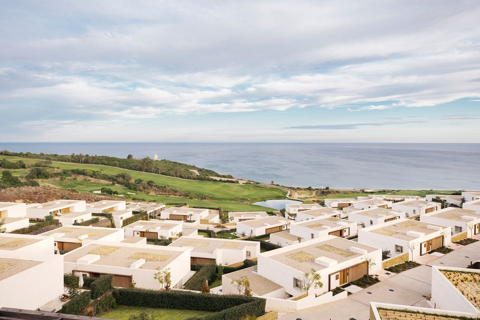

De Lamborghini a Dolce & Gabbana o el Ritz: por qué España se ha convertido en la nueva meca de las residencias de marca

El mercado español contabiliza 52 proyectos y 3.095 viviendas valoradas en su conjunto en más de 5.500 millones de euros
Las líneas de los superdeportivos Lamborghini han saltado de las carreteras a las fachadas y cocinas de 29 villas en Benahavís (Málaga). Las viviendas parten de nueve millones de euros y alcanzan hasta los 12,7 millones. No es un caso aislado. Dolce & Gabbana, Armani, Fendi, Karl Lagerfeld, Fairmont o Mandarin Oriental, entre otros muchos, también han llevado sus marcas al mercado residencial español. Las branded residences viven un bum . Estas promociones vinculadas a firmas de moda, cadenas hoteleras o fabricantes de automóviles están orientadas a grandes patrimonios y pueden alcanzar sobreprecios cercanos al 40% respecto a una vivienda similar sin marca. La consultora Savills afirma que…